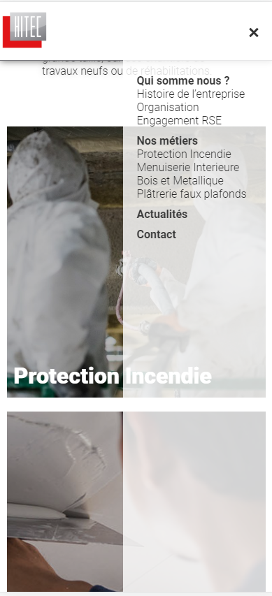

Site vitrine client
Contexte
Projet réalisé dans le cadre de le cadre mon alternance
Le client est une entreprise dans le secteur du batiment.
Il souhaite un site vitrine pour présenter son activité et ses
préstations.
Le site doit être responsive et respecter la charte graphique de
l'entreprise
Outils Utilisée
- HTML
- CSS
- PHP
- JavaScript
- Elementor(Outil CMS NO-CODE)
Problématique
Le client souhaite un site vitrine pour présenter son activité et ses
préstations.
Le site doit être responsive et respecter la charte graphique de
l'entreprise
Compétences acquises
- travailler en mode projet
- Création d'un site vitrine
- Utilisation d'un CMS
- Respect d'une charte graphique
- Responsive
Etape de réalisations :
- Prise de contact avec le client
- Création d'un cahier des charges
- Création d'un maquette
- Création du site
- Présentation du site au client
- Modification du site
- Validation du site par le client
- Mise en ligne du site (non réaliser par moi)
Prise de contact avec le client
Le client souhaite un site vitrine pour présenter son activité et ses préstations.
Cahier des charges
- Présentation de l'entreprise
- Présentation des préstations
- Présentation des réalisations
- Présentation de la actualité linkedin du compte
- Présentation des coordonnées
- les textes des sites seront remplis par une personne interne à l'entreprise
- des reunions hebdomadaire son organiser pour échanger sur l'avancer du site
Maquette
-
Durée :
2 Semaines
-
Objectif :
Création d'une maquette fonctionelle
-
Contrainte :
Respecter la charte graphique de l'entreprise
-
Technologie :
HTML CSS JS

Une maquette à été réaliser en HTML CSS pour montrer l'apparence du site au client et pour voir si cela lui correspond
Création du site
-
Durée :
2 Semaines
-
Objectif :
Intégrer le site sur un CMS
-
Contrainte :
Respecter la charte graphique de l'entreprise
-
Technologie :
Wordpress PHP Elementor

Une fois la maquette du site validé par le client.Nous avons donc convenu d'integrer le site sur wordpress
Nous avons donc défini quel element serrais gerer par quel solution
- Menu
- Footer
- Header
Via PHP
- Les Views
Via Elementor
- Menu burger
JavaScript
PHP
Dans la partie PHP nous avons convenu de partir sur la création d'un theme simple pour gerer les la redondance des menus du header et du footer.
Le theme est composer de 5 fichiers
- index.php
- header.php
- footer.php
- functions.php (Gestion des menu)
- un fichier CSS pour gerer le style des composant(Header,Footer,Menu)
Index.php
Le fichier index.php contient la structure de base d'affichage de chaque page nottament le header le footer le contenu des pages
<?php get_header(); ?>
<main>
<?php get_template_part( 'content', get_post_format() ); ?>
<?php if ( have_posts() ) : while ( have_posts() ) : the_post();
the_content();
endwhile; else: ?>
<p>Sorry, no posts matched your criteria.</p>
<?php endif; ?>
</main>
<?php get_footer(); ?>
Header.php
Le fichier header.php contient le code HTML du header avec des inclusions de l'emplacement des menu
<!DOCTYPE html>
<html lang="fr">
<head>
<meta charset="utf-8">
<meta http-equiv="X-UA-Compatible" content="IE=edge">
<meta name="viewport" content="width=device-width, initial-scale=1">
<meta name="description" content="">
<meta name="author" content="">
<title><?php get_the_title()?></title>
<!-- Ajout de la feuille de style qui sera spécifique au thème -->
<link href="<?php bloginfo('template_directory');?>/blog.css" rel="stylesheet">
<!-- HTML5 shim et Respond.js pour supporter les éléments HTML5 pour Internet Explorer 8 -->
<!--[if lt IE 9]>
<script src="https://oss.maxcdn.com/html5shiv/3.7.2/html5shiv.min.js"></script>
<script src="https://oss.maxcdn.com/respond/1.4.2/respond.min.js"></script>
<![endif]-->
<?php wp_head(); ?>
</head>
<body>
<header>
<?php
wp_nav_menu( array(
'theme_location' => 'nav-resp',
'menu_class' => 'mob-log',
) );
?>
<nav class="nav-dis">
<?php
wp_nav_menu ( array (
'theme_location' => 'nav-menu' ,
'menu_class' => 'my-nav-menu',
) ); ?>
</nav>
<div class="burger"></div>
</header>
Footer.php
Le fichier footer.php contient le code HTML du footer avec des inclusions de l'emplacement des menu
<footer class="foot_container">
<div class="med">
<h2>Suivez-nous</h2>
<?php wp_nav_menu( array( 'theme_location' => 'footer-menu-media',
'menu_class' => 'med', ) ); ?>
</div>
<div>
<h2>Nos métiers</h2>
<?php wp_nav_menu( array( 'theme_location' => 'footer-menu-met',
'menu_class' => 'footer-menu', ) ); ?>
</div>
<div class="">
<h2>Notre organisation</h2>
<?php wp_nav_menu( array( 'theme_location' => 'footer-menu',
'menu_class' => 'footer-menu', ) ); ?>
</div>
<ul class="copy_list">
<li>
Copyright © 2023 Hitec. All rights reserved.
</li>
</ul>
</footer>
<script src="https://ajax.googleapis.com/ajax/libs/jquery/1.11.3/jquery.min.js"></script>
<script src="https://maxcdn.bootstrapcdn.com/bootstrap/3.3.5/js/bootstrap.min.js"></script>
<?php wp_footer(); ?>
</body>
</html>
Functions.php
Le fichier functions.php contient le code PHP pour gerer les menus et la css
<?php
/*** Ajouter un script ou un fichier CSS de la bonne façon */
function wpdocs_theme_name_scripts() {
wp_register_style('main-style', get_template_directory_uri().'/blog.css', array(), true);
wp_enqueue_style('main-style');
#wp_register_style('bootstrap-style', 'https://maxcdn.bootstrapcdn.com/bootstrap/3.3.5/css/bootstrap.min.css', array(), true);
#wp_enqueue_style('bootstrap-style');
}
add_action( 'wp_enqueue_scripts', 'wpdocs_theme_name_scripts' );
//ajouter une nouvelle zone de menu à mon thème
function register_my_menu() {
register_nav_menu('nav-menu',__( 'Menu Nav' ));
register_nav_menu('footer-menu',__( 'Menu Footer' ));
register_nav_menu('footer-menu-met',__( 'Menu Footer Metier' ));
register_nav_menu('footer-menu-media',__( 'Menu Footer Media' ));
register_nav_menu('nav-resp',__( 'Menu Resp' ));
}
add_action( 'init', 'register_my_menu' );
?>
Elementor
Elementor est un plugin qui permet de créer des pages en drag and drop.
C'est outil est nottament utile,pour permettre la modification l'ajout , ou la suppression plus facilement une fois le site livré.
Legende
- 1 . Composant pouvant etre drag & drop dans une setion de la page
- 2 . Barre de navigation
- 3 . Navigateur qui permet d'acceder au differente Section de la page
- 4 . Section de la page
JavaScript
En JavaScript j'ai eu pour mission de réaliser le menu Burger dont voici le Code
document.addEventListener("DOMContentLoaded", (e) => {
let navi = document.querySelector(".nav-dis");
let burger = document.querySelector("header>div");
burger.addEventListener("click", (e) => {
navi.getAttribute("class") == "nav-dis" ? navi.setAttribute("class", "nav-enab"): navi.setAttribute("class", "nav-dis") ;
burger.getAttribute("class") == "burger" ? burger.setAttribute("class", "cross"): burger.setAttribute("class","burger");
});
});
Le Rendu
